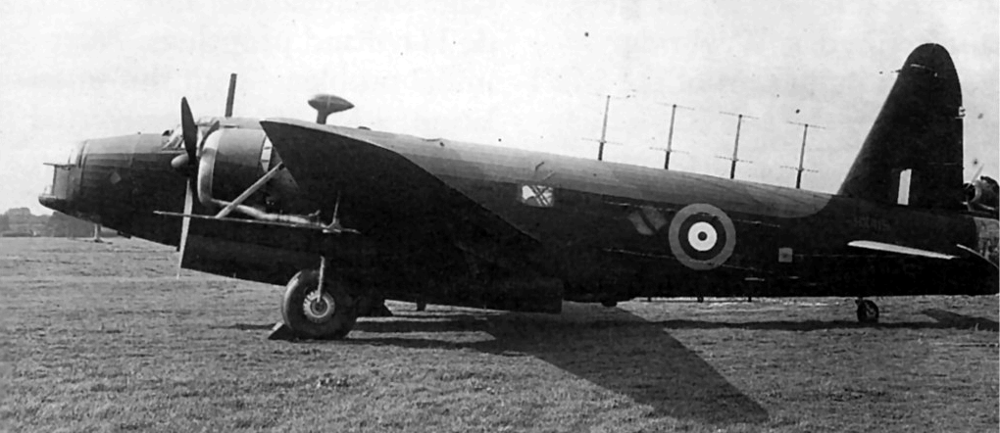

Wellington Mk.X стал последней серийной модификацией бомбардировщика. Он строился на базе планера Mk.III и имел аналогичное вооружение и оборудование. Основным отличием стали новые 14-цилиндровые двухрядные двигатели воздушного охлаждения Bristol Hercules Mk.VI (на часть самолётов ставили Hercules Mk.XVI) номинальной мощностью 1675 л.с. Менее заметным, но не менее важным, чем замена двигателей, отличием стал переход к новому алюминиевому сплаву с лучшим отношением предела прочности к удельному весу. Использование этого сплава в конструкции самолёта позволило увеличить взлётный вес, сохранив лётные характеристики модификации Mk.III.
Серийно модификация Mk.X (Type 448) стала выпускаться с осени 1942 г. и стала самой массовой в семействе «Веллингтонов». В общей сложности построено 3803 экземпляра. В октябре 1945 года была построена последняя из 11461 машины, выпущенной серийно.
«Веллингтоны» применялись в Европе с сентября 1939 г. как дальние разведчики, дневные и ночные бомбардировщики, с начала 1940 г. только как ночные. С сентября 1940 г. самолёт использовался в Северной Африке, с апреля 1942 на Дальнем Востоке.
В 1942-43 годах Wellington стал основным самолётом Бомбардировочного Командования (Bomber Command RAF). Боевой опыт показал, что он являлся лучшим из трех средних бомбардировщиков, использовавшихся в этот период. Он был более скоростным, чем Armstrong-Whitworth Whitley, и обладал большей дальностью при равной бомбовой нагрузке, чем Handley-Page Hampden. В состоявшемся 30.05.1942 первом налёте «1000 бомбардировщиков» на Кёльн из 1043 самолётов, отправившихся в рейд, 599 были бомбардировщики Wellington.
Боевая работа в Западной Европе закончилась для «Веллингтонов»–бомбардировщиков в ночь на 09.10.1943. На смену им в бомбардировочную авиацию RAF, наращивавших натиск на Германию, пришли тяжёлые четырёхмоторные машины – Short Stirling, Handley-Page Halifax и Avro Lancaster.
На других театрах военных действий самолёт применялся RAF до конца войны. Противолодочными «Веллингтонами» потоплено значительное количество подводных лодок стран «Оси». Снят с производства в октябре 1945, снят с вооружения в марте 1953.